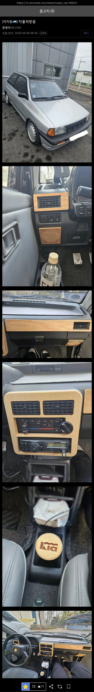

뭐...뭐야

뭐...뭐야
왠지 두부 한 모를 싣고 산길 내리막을 타고 싶네
아빠 둘에 엄마 하나...?
직접 나무 짜서 넣었나 ㄷㄷ
??? : 야 나가보자ㅋㅋㅋ
자 이제 여기다 콜벳엔진을 넣어보자
부산 괴프 ㅋㅋㅋ
프라이드햄..
와! 관성드리프트!
이런건 사고나면 차 가격을 똥값으로 치나?
저런차도 보험사에서 평가하는 잔존가치 기준이 있음
자차 보험처리 : 전손처리하고 잔존가치 만큼만 제공
상대 100 사고 : 소송까지 진행시 튜닝비 받을 가능성 있음
보통은 처음에 차량가액 부르는데
그게 오십만원 이지랄임
거기서 그냥 그런가보다 하고 받아들이면 하수
개지랄 마라 내가 이거 얼마주고 삿는데
지금시세가 이거다 이가격 내놓거나
원상복구 해놔라
하면 이김.
대부분 올드카가 그러함.
부장님! 각그랜저! 각그랜저!
관리 개잘했네. 저거는 지나가면 돌아보고 사진 찍을 거 같다.
차가 엄청 깨끗하네 ㅋㅋ
괴프인줄 알았는데 아니네
내장제를 나무합판으로하믄 사고나면 작살나면서 몸에 다 박혀서 큰일날텐데...
그러기엔 이미 나무로 실내 한 차가 많은걸?
원목말고 나무합판
그게그거아님?
나무를 얇게 저며서 붙이는 고급차랑 나무를 얇게 썰어서 지그재그로 본드적층한걸 컷팅해서 붙인건 다른거야..
원목은 사고나면 안부서짐?
ㅇㅎ
프라이드면 애매하게 다칠꺼 확실하게 가야지
사고나면 뒤지겠네
와..족간진데
얘보단 상태별로지만 나도 한대 있다 ㅋㅋ 5도어로
원목이라니... 갤로퍼 리스토어때 원목으로 하던 업체 생각나는구만
거기 유명했지
부담스러워서 못 받것다 유지못해 난
와 진짜 잘 유지하셨네
올드카에서 티코는 똥값이던데
프리미엄없이 200정도 받는데 별로 값어치 인정 못받는거같음
티코는 물량도 많고 남미에는 지금도 현역임..
물량은 프라이드가 더많을걸 ㅋㅋ 한국에 프라이드 꽤많음. 프라이드도 현재 250정도 할거야 십년전에 수동 탓엇는데 ㅋㅋㅋ 지금은 모르갯다
개체수가 줄어도 그냥 가치없는 차들이 태반임 ㅋ
그냥 추억의 썩차일 뿐..
그래도 본래 차가격 생각해보면 똥값이라고 할 수도 없음.
프라이든가? 어릴때 우리집차였는데 에어컨조작부가 기억이 갑자기 나네 ㅋㅋㅋ
마썸카
ㄷㄷ
이제 갓 면허딴 애기들 괜히 돈은 없는데 힙해 보이고 싶어서
썩차들 끌고 다니던데.. 안그랬음 좋겠다 .. 나도 클카 영타이머 많이 타보고 갖고 놀았지만
국산 썩차들은 고장이나 뭐 이런건 차치하고서라도,
별거 아닌 사고에 스트레이트로 저세상 보내주는 차들임.
와 개부럽네
밖에 별로 안끌고 다닌건가 관리가 너무 잘됐네
요즘 폐차도 프라이드 같은건 안보임
그정도로 귀해졌음
신차 출고함? 상태가 어찌 저렇지
저정도 차는 아예 차 전부 분해 후 조립도 되겠는데.
본인 안전을 위해서 주변 환경을 위해서 정리 하은게 맞을거 같은데...
저시대 엔진에서 나오는 유해가스가 지금나오는 차 100배정도 될걸
초보일수록 좋은 차를 타야함.
요즘 안전 보조 장치가 얼마나 많은데..
관리를 어케했으면 저렇게 깨끗하냐 주머니에 넣고다녔나